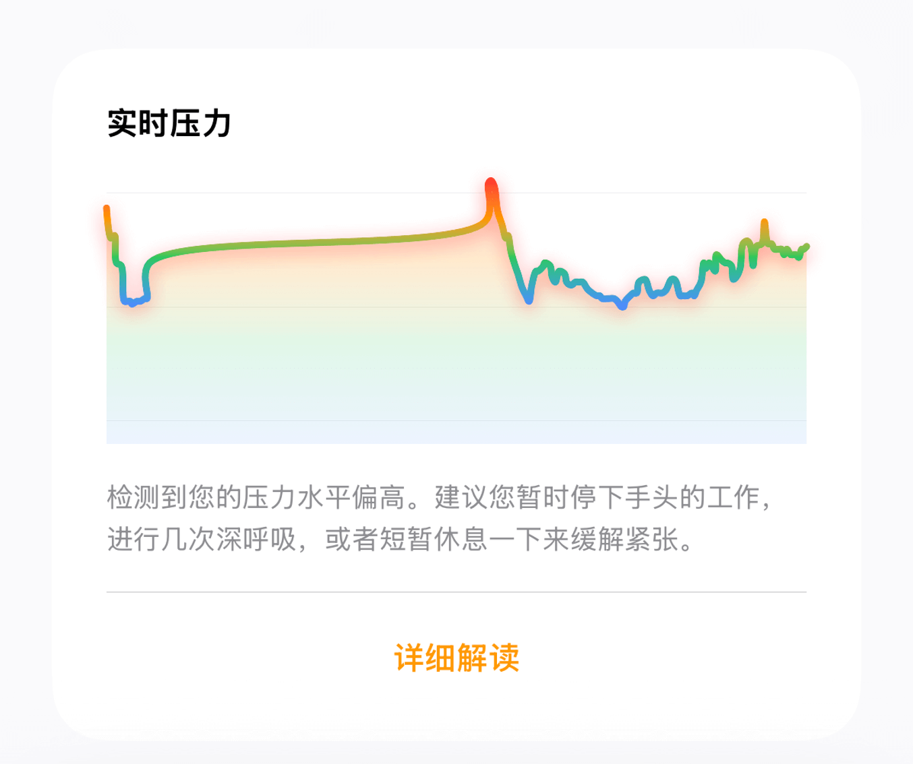
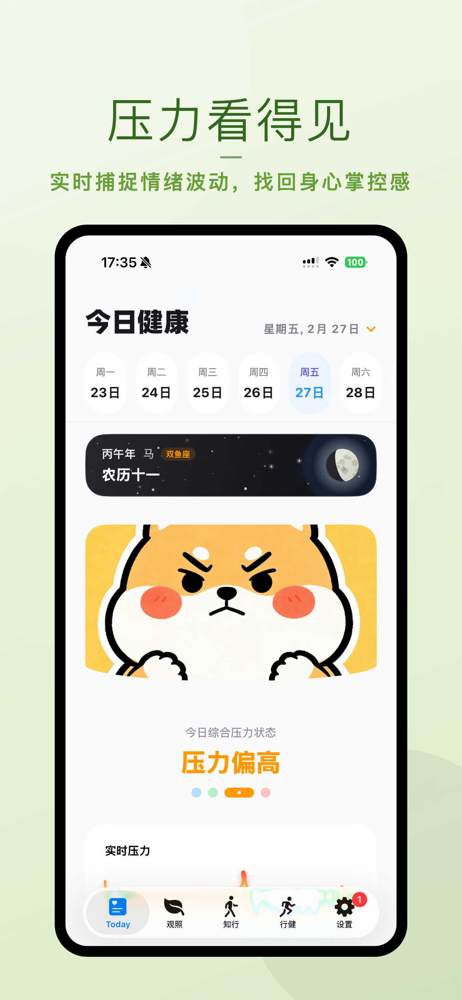
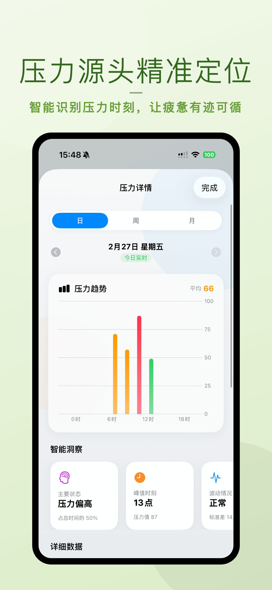
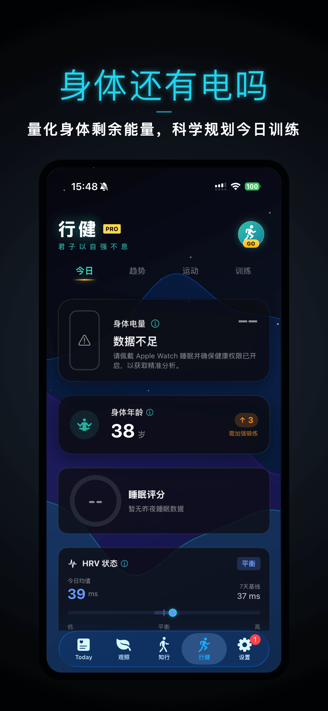
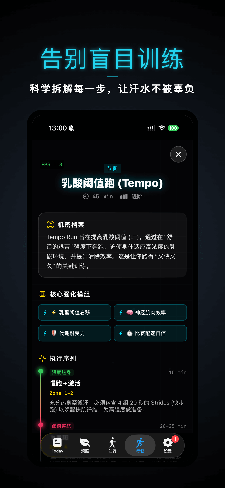
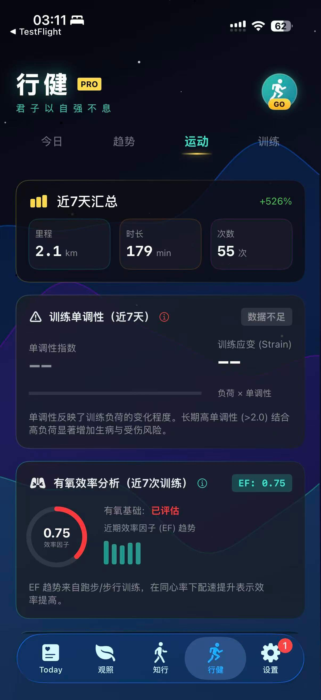
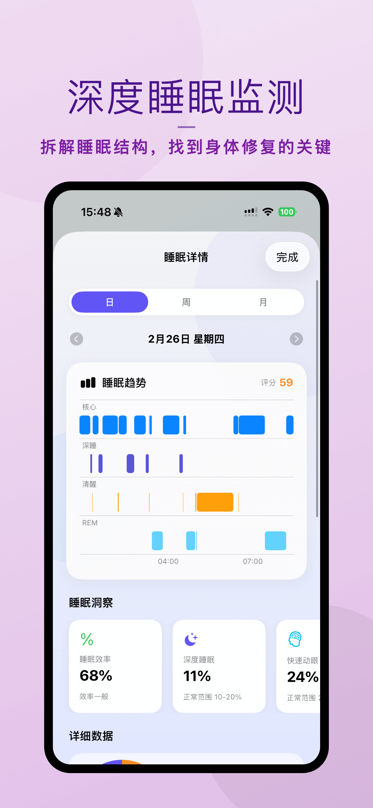
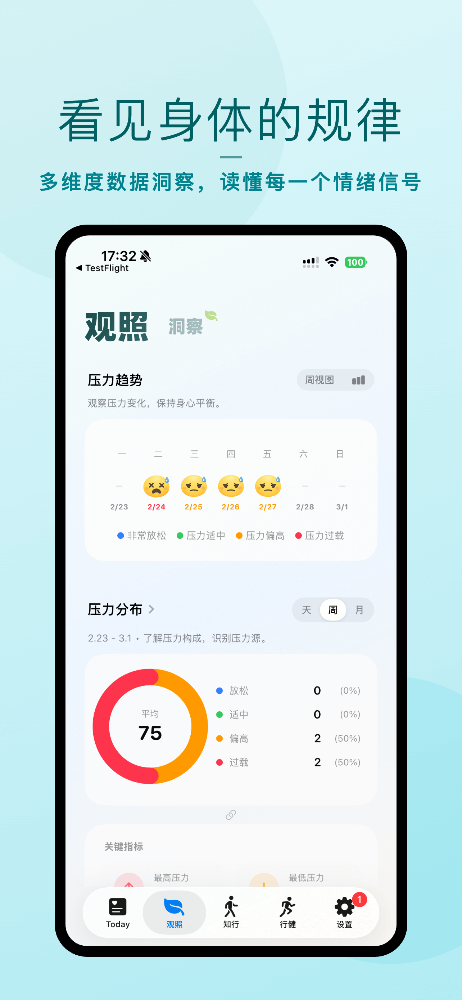
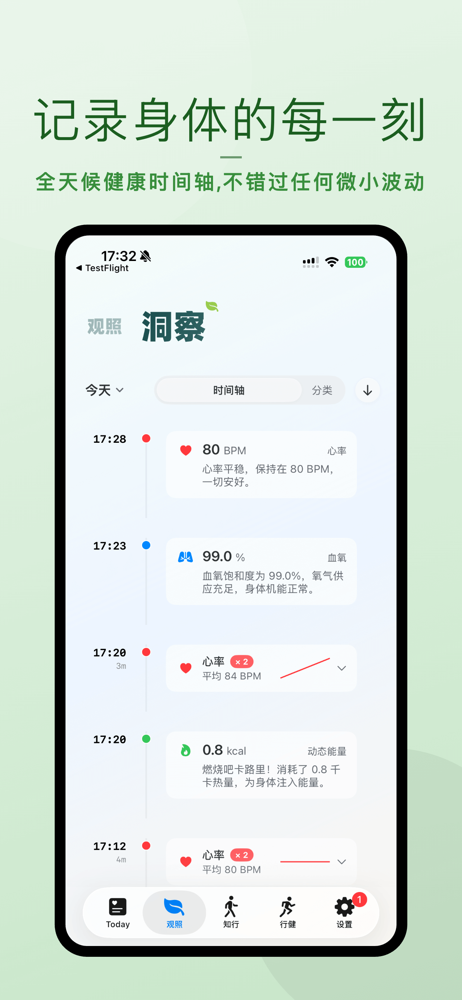
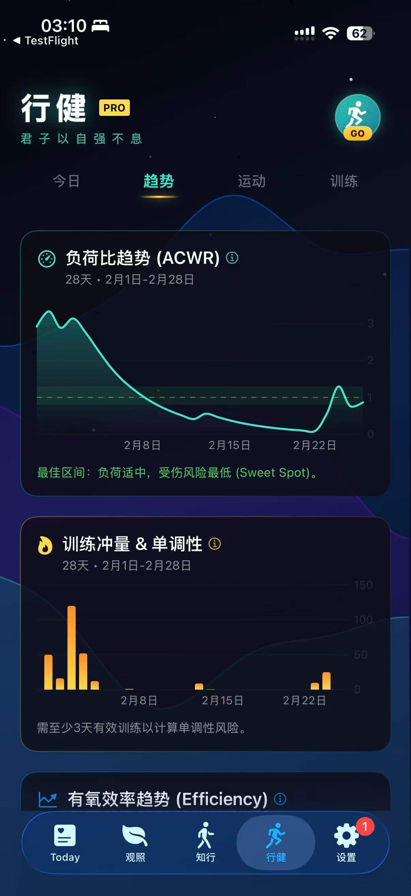

元宵佳节将至，这是团圆的日子，也是新一年奋斗的开始。
在这个快节奏的时代，我们习惯了向外看，看工作、看社交、看世界，却很少向内看，看看自己的身体，听听内心的声音。你是否感到莫名的疲惫？你的压力究竟来自哪里？你的身体还有电吗？
为了让更多朋友能通过 Apple Watch 更好地了解自己，腕能 App 开启元宵节限免活动！
🎉 限免时间：2026年2月28日 - 3月3日 23:59
0 元领取终身会员，解锁全部高级功能。
本次更新带来了四大核心功能，希望能真正帮到你：
1. 压力看得见：源头精准定位
不仅仅是数字，我们让压力“可视化”。首页实时展示压力状态，新增压力源头精准定位，帮你分析是工作、睡眠还是其他因素导致了压力波动。试试搜索“压力自测”，让腕能帮你找到答案。

▲ 首页实时压力状态


2. 身体还有电吗？行健与科学训练
身体就像电池，需要充放电管理。新版本引入“身体电量”概念，直观展示能量储备。针对跑步爱好者，我们提供科学的训练指导，拒绝无效堆跑量，让每一次流汗都更有价值。



3. 深度睡眠监测：睡个好觉
睡眠是恢复能量的关键。我们强化了睡眠分析算法，特别关注深度睡眠时长与质量，帮你拆解睡眠结构，找到身体修复的秘密。

4. 洞察与观照：看见身体规律
通过长期的“观照”，你会发现身体运行的规律。我们将每一个瞬间记录下来，生成可视化的健康趋势图，让你对自己的身体了如指掌。



如何获取？
打开 App Store 搜索关键词
“压力自测” 或 “腕能”
立即下载体验
提前祝大家元宵快乐，愿你身心安康，电力满满！